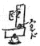
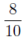

一月一日
水 の正月のしじまいだ。遊びじまいをした。
の正月のしじまいだ。遊びじまいをした。一月四日
土一月五日
日一月六日
月一月九日
木一九〇五年の一月九日の四人朗読非常によかった。
今日やっとビザがもらえた。三ヵ月だ。
一月十日
金一月十一日
土一月十二日
日Ｋ、ローマから手紙。もう一月六日に日本へ立ってしまった！ 何だ！ 何のために出てきたのだ。バカ！
一月十三日
月一月十四日
火Ｙのところへ先生が来るというので出かけて Moscow まわりをしたが待ちぼけだった。
一月十六日
木かえって仕事しようとして居たらオリガさんが居て実は
一月十七日
金Ｙ、先生。自分パッサージへ行って、クロプイ〔南京虫〕の薬かって、上靴を買った。
一月十八日
土洗濯をとって渡して来た。こんどの支那人は、若い夫婦で心持よかった。それから一人でもやフレスチャーノヴィッチへ行って留守。手紙だけおいて来た。
一月十九日
日自分あの病院の門をくぐるときのいやさ！
一月二十日
月一月二十一日
火面白かった。但、買いたい近代のエハガキはない。
Ｙ、油橋さんのところへ質問に出かけた、留守だった。
一月二十二日
水自分かえって仕事。
一月二十三日
木Ｙ、散歩したぎり、自分仕事。
一月二十四日
金一月二十五日
土夜、教師。べこ、活動。
一月二十六日
日宮川さん。
家へかえってものをよんで、夜ホテルへ行った。
一月二十八日
火自分少し風邪ぎみだ。夜オリガさんのところへ出かけて、二時頃歩いてかえった。
一月二十九日
水一月三十日
木この頃Ｙ、ずっと一日平均五枚ずつやって居る。さあ、今日の分かせげたと云ってよろこぶなり。
一月三十一日
金寒し。二人とも籠居。仕事。
二月一日
土二月二日
日オリガさんが来るというので、いそいで Taxi で馬場さんに送られてかえったら、来て居ず。
二月三日
月大使館でスエ子の手紙。林町からの手紙。中井さんからの手紙。
最大の News は網野さんが結婚して奉天へ行ったということだ。
万歳！ 万歳！ 何しろ生活は停滞ほどわるいものなしだから結構結構。
夜、オリガさんが一時すぎまで居た。
二月四日
火べこ少しおなかの工合わるく、悄気ておとなしくなった。然しそんな工合でどの位仕事出来るかやって見よと、ウージン〔夕食〕までやった。少々。
○朝日が照った。Ｙ、べこをつれ出して写真をとった。
二月五日
水今日は自分気分がわるいので、食堂に坐って居て外出せず。
夜、馬場さんのところまでＹと二人で歩いて行った。かえりは馬車。
二月六日
木下宿に払う。
二月七日
金二月八日
土朝食をして居た時から五時すぎ обед をするまで河岸の新しい家の火事がつづいた。これはクレムリンの中が引越して来る筈の新建築。
Ｙ、ひとりオブラゾワーニエ［＃古本屋名］行。ボリナ・チャストニコフ〔自由個人商人の意〕で気が荒くなって居る由。
牛乳来ず。
二月九日
日二月十日
月○旅行記パスせず。オヤオヤ九十三枚手習いか！
自分プレハーノフを引く仕事をさずかる。ありがたし。
もや、おできにて閉口す。
二月十一日
火二月十三日
木二月十四日
金自分何だか肩が張って困る。
夜オリガさんのところへ行った。嫉妬という活動をべこ一人見た。下らぬ。ところがそれがウェルネル・クラウスとプティであった。扱いかたがまるで心に訴えて来ないのだ。
二月十五日
土もやのできもの大分よろしい。
二月十六日
日夜、三人で出かけて〔以下空白〕
二月二十二日
土二月二十三日
日――――
もうずっとコムナール〔国営の食堂兼食料品店〕の果物のところに煙草がおいてある。そのタバコもナーシャマルカ〔わが国の商品〕、デリ、その他、モッセルプロムは時々だけ。
二月二十四日
月二月二十五日
火ЦКВУ の診療所へ行ったがどうも大したことないらしい（つまりはっきり診断されず）
夜、メイエルホリド見物。野崎さんに会って一緒にかえった。
二月二十六日
水川谷さんの細君
二月二十七日
木二月二十八日
金へ行くのでよった。自分 station へ迎いに行った。一日居て、夜送ってゆく。つかれた。
あっちこっち見せ、よかった。
始めてミモサの花を見た。
三月一日
土べこは油橋さんにスピルトーフカ〔アルコールランプ〕をかえしてソヴキノでニューヨークのドック、日本では何とか云った題のを見た。
アメリカにある甘さを一寸うまくこなして機械なども出し相当よかった。技巧だな。筋より。
三月三日
月暖かくまるで春だ。まぶしくてつかれた。
三月四日
火夜オリガさんのところへ行く。オリガさんドム・ウプラブレーニェ〔アパート管理部〕のセクレタリ〔書記〕（無料）で電燈計算をやって居た。一まとめに書き出す。それを各自燈数にわけて金を集めるのだ。水道では人員。
三月五日
水モスク
の早い雪どけ。どんなに紳士的に歩いても、靴の周囲十センチメートルは危険区域をつくる。自動車は夕立のような音をたてて水をしばいて走った。三月六日
木第一回目発声映画が封切だ。もううり切れで買えず。やはり暖いが少し寒くなったブル
ール〔並木道〕で女芸人がコバルトの綿入胴着で腕や肩をまる出しにし、休むとき洟をきたないハンケチでふき乍らとんぼがえり、銀貨を逆さに、体をひっくりかえして口でとる芸当その他やってる。とり肌でやってる。バイオリンとガルモシュカ〔アコーディオン〕。誰も手をたたかぬ。ピカーントヌイ〔同情をそそる〕なのだ。金を皆がやる。後の女が「アニー、ジャレーユト」〔彼等は同情している〕と云った。三月七日
金きのう、この室を出なければならないことになったと親爺が云って来た。第一本のしまつだ。Ｙタイプライターで送る分のリストをつくった。
又寒くなった。窓から赤いプロッカート〔ポスター〕がパタパタして居るのが見える。その裏は白い。白い裏なんか変だが白くてパタパタした。
三月八日
土ドクラード（五年計画を中心としたもの）それから ТРАМ〔労働青年劇場〕の芝居。一時頃ひどくすべる路を天羽さんのところへ出かけ、三時まで居た。ここはちっとも面白からず。今年の Женский День〔婦人デー〕は五年計画と関係して、独特の意味があった。例年のような陽気なお祝ではなく、もっと緊張して。
三月九日
日サボイで近藤さんに御飯。二時頃かえりねる。
自分金曜日に椅子でつめた指痛くはないが押すと血が出る。
三月十日
月出かけ、髪をきり、床屋の話をきく。麦酒の麹をかってかえった。レモン、今日はコムナールにもない。コムナールの食物のところ空々で空の木箱が置いてある。
この頃道がひどい。出て靴下をよごさぬことは不可能だ。洗いたい。指がわるくて洗えぬ。不自由この上なし。
ウイストレルを見た。Ｙ面白くないと云い、自分もその時満足しなかったが、あとで思い出すと、やはり印象にのこってるものあり。
三月十一日
火○この頃魚のカンヅメがいつも夜出る。いろんな魚だがトマト煮だ。どれもこれもトマトにたたき込んである。
三月十二日
水は洗濯水に浸ったようだ。その中を鉄のファイルボックスみたいな応急自動車が赤十字をつけて走る。○午後二時前後、小学校の始めの小さい組がかえる時間。アルバート附近のドヴォール〔中庭〕、湖のように雪解水に浸り、樹はそろそろめぐみ、一種の美しさだ。新しいコオペラチーブ〔協同組合住宅〕にはこのモスク
のドヴォールの感じなし。レーニングラードにもない。街にはオーチェレジ〔行列〕。チェボー、スタイーチェ？〔なぜ立っているんですか〕
ザ、ルイブ！〔魚のためですよ〕
三月十三日
木三月十四日
金これは面白かった。一寸ワフタンゴフごのみのところもないではないがおもしろかった。
○イズヴェスチャにエフィモフが Фокусы польской дефензивы〔ポーランド保安隊のペテン〕という題で、「СССР より農民群の逃亡」という題で書いたポーランド新聞を諷して居る。
うちの細君、サリョーヌイ・ミヤーソ〔塩漬の肉〕を買わされて来て、どんなに食えるかまだ分らぬと閉口して居る。
三月十五日
土かえってから仕事。Ｙ、新聞からいろいろコルホーズ［＃集団農場］のエピソードその他話してそれを自分が書き、一寸面白かった。
○アホートヌイ〔アホートヌイ・リャード、現在のカール・マルクス大通り〕に又百姓がそろそろものうりに出かけて来た。政府が許すようになったのだ。細君が見て居たら、一フントのバター ５р.、テリャーチナ〔子牛肉〕の足一本十五
三月十六日
日Ｙ、もう少しで仕事がすむというので元気のよいことお話しにならず。自分ももう少しだ。夜Ｙ、オリガさんのところへ一人で出かけた。
三月十七日
月おせん来。
夜アイーダ。二人はオペラよりキノ〔映画〕がすきということに結論した。
三月十八日
火三月二十日
木自分、「ロンドン一九二九年」を。
Ｙ、夜オリガさんのところ。
○この頃三四日おやじの顔を見ないと思ったら、今日鼻を赤くして、しょぼんとして居る。「カーク、ヴィ、チューストヴェチェ、セビャー？」〔具合はいかがですか〕「ニエワージュノ」〔よくない〕そしたら夜室へ入って来て、何日出るかはっきりした日をしらせてくれ、新聞に出されたりするとやり切れぬ。別の номер〔借室〕へはコオペラチーブのウダルニク〔突撃作業班員〕が来てツェールイ・リャード〔一連の〕の不愉快があったと云う。我々30日までに出ることにした。
三月二十一日
金自分大使館へ行ってザボールナヤ・クニーシュカ〔配給通帳〕のための証明を書いて貰う。夜油橋さんのところ。
パッサージへ行ったが、カントーラ〔事務所〕の人別な男で、二十日までに室あるかどうか分らぬ。27日に来いと云う。
三月二十二日
土夜猶太劇場。
三月二十三日
日コオペラティブではレモンも何もないのに、道ばたで百姓女がレモンをもってる。彼等がどこから手に入れて来るのか、それがないと供給しきれぬところ、やっぱり百姓め、なかなかどうして急所をにぎって居る。
今日小包を五つ送り出した。秀雄さん宛。
三月二十四日
月Ｙ、桜木さんのところへゆき、サヴォイへ行って、かえって来る。自分原稿の手入れ。
川谷さんから貰った餅を夜煮てたべる。
Ｙのところへ送金したという電報秀さんより。
○自分雑誌の切りぬきをやってる。
三月二十五日
火――○――
○原稿を石川さんにたのんで送った。
ボリス・ゴドノフを見る。この方がずっとアイーダよりよろしい。（ただ終りにＹの意見によるとつけたらしい、アンティポリスキノ・ベズボージュニク〔反ポーランド無神論者〕、プロレターリア・カラー的のものがある。）Ｙ、オペラだとつまらながって、間に本を読んで居る。Ｙのほかにそういう女二三人居た。この神経の感じ。Ｙもその点ではソヴェトスカヤ〔ソビエト女〕だ。
又パッサージへよって見る。又別な男。やっとカレンダーへ名を書き入れてくれた。
三月二十六日
水自分だってそれは同じだ、そう腹を立てた。
夜独りでロシアの所謂ズブコボイ・フィルム〔トーキー〕を見た。ロシアではまだ下手だが、例の
パッサージが駄目だと閉口故、セレクト〔ホテルの名〕へ行って三谷氏にきいたら、一日前でどの室でもよければあるとのこと。
三月二十八日
金おせんこ。べこはナルコムプロス〔教育人民委員部〕へ行って、家へかえってから АОМС〔モスクワ・ソビエトの行政部〕へ出かけ огонёк〔雑誌『灯』社〕へ出かけ、チェホフのあまりをとってパッサージへ室をききに出かけ、かえりに大使館へよって箱をきいた。そして家。路がきたない。つかれた。
Ｙはナルコムプロスから運送やをさがしてうろつき、かえった。しかしすべて順に行ってよかった。
メイエルホリドで新作「バーニャ［＃風呂］」を見た。
四月四日
金四月五日
土それからナルコムプロスへ行って又ステーションへ行った。
自分机の上をすっかり、いるものを出してそれから食事、理髪へ行った。
四月六日
日アホートヌイまで一緒に行って、べこは買もの。夜メリーさんのところへ行って喋った。
四月八日
火ガローシ〔オーバー・シューズ〕なしだ。女は早速春外套やスーツであるいてる。
四月九日
火テアトラリヌイ〔街路名〕を明かにモスク
人ではない若い男が素頭に白靴でぶらぶらして居た。手に新聞と何かたべものの紙包をもって。まるでクロールト〔保養地〕のような感じだった。彼のまわりにクロールトがあるようだった。四月十日
木朝起き三文の徳アリ。女中70番が今空くというので、カントーラへかけつけてやっと日の当る室へ引越した。それから、近藤夫人とキモノを縫う。婆さんのところへ行ってかえって обед。夜、ГОТОБ〔国立歌劇舞踊劇場〕第一へ行って「アペルシンの三つの恋」を見た。おとぎ話だが、あんなものを新上演する気がしれず。
四月十一日
金・クラブへ行って切符かって、アルバートへ行って油橋さんに会って、それから歩いて家までかえった。四月十三日
日今日は朝アホートヌイですっかり市場が出て居るのを見物し、胡瓜その他を買って二時間後Ｙと行ったらもう何一つ影をかくし、巡査が多勢いて一寸人がかたまると、プロドイガーエチェシ〔行った、行った〕とやってる。この変化に自分は愕いた。興味を起してアルバートへゆく。ここは沢山の人だ。
夜フートボーリスト。馬場君知った女が出るというので、批評も何となくいい心持になっている。
今日は我々の記念日だった。忘れて五月三日に思い出しよみなおした。
四月十四日
月それから自分ニアリングの教育に関する本をよみ、面白かった。いろいろ知識を得る。
夜十時からオリガさんのところ。かえりの бус〔バス〕の中でけんかが起って、証人になって呉れと云われたと云ってＹ亢奮してかえる。自分がルガーチ〔ののしる〕ないでひとの証人ならまだよいと笑った。
四月十五日
火○自分、Ｙになおして貰ってリストを又タイプライターで打ちなおした。
そして持って ВОКС へ出かけた。
夜革命劇場。そこでパルトビレート［＃党員証］を見て居たときイズヴェスティア〔ニュース〕でマヤコフスキーの死を知った。これは意外で、となりに居た太った男も愕いて居た。
四月十六日
水ВОКС へ行って紹介を貰って油橋さんをさそってファブリカ・クーフニヤ〔調理工場〕に行って見せて貰った。この辺には一つもこういうものがないのだから労働者にとってどの位よいか分らず。これ一つで理想的とはゆかぬが、これが各区に一つか二つずつ出来て来ると大したものだ。かえりに三人で仕立屋へよる。そして腹を立てた。夜レーニングラード作家の夕べにゆく。かえりに клуб писателей〔作家クラブ〕でマヤコフスキーの告別に連る。夜十二時。
四月十七日
木それから仲なおりし、Ｙは、マヤコフスキーの死についての報告をかき始め、自分芝居の印象などまとめて居るころに仕事したくなった。
夜、Ｙ一人でおく為、自分桜木さんのところへ行ったが留守。シャノアール〔映画館名〕で「お前誰だ」を見た。
四月十八日
金かえりに近藤さんのところへより、本送り出しの証書渡してかえる。なるだけ外に居たら、Ｙはひとりでキャベジの香のものなんかつけてた。
夜、Ｙは家で仕事したいというので、自分いやだったがオリガさんのところへ行ってかえったら、Ｙ、もうウージンして居た。オリガさんＹにいろいろこまこま食べるものくれた。
四月十九日
土一昨年フラム・フリスタ・スパシーチェリ〔救世主キリスト寺院〕の祈りに行った時分は雪があって、夜二人で折りかさなって滑った。今年はもうすっかり春仕度だ。風。埃。そして自分は数日来の鼻カゼがなおらぬ。
これなら I-е Мая〔メーデー〕は白服だ。全く。
パンを買うのにどこも売り切れ。やっとキースルイ〔すっぱいの〕を半フント五
夜二人でルビヤンカ〔地名〕のイワン・グローズのたてた古い小さいいい寺の内を一寸見物し、ミャソニーツカヤ〔街路名〕を散歩し、茶をのみ、いろいろ面白い話をきいた。
○街によっぱらい多し。ぼろを着てフリスタス、ヴォスクレース〔キリストは復活せり〕と唄って歩いてるものもある。夜三時頃まで、下のラボーチャヤ・モスク
〔クラブ劇場「労働モスクワ」〕でダンス音楽をやってた。四月二十日
日それから自分 ВОКС へ行って、紹介状二つ貰い、明朝監獄見物を約束してかえる。
обед それからパン、茶、砂糖を買いに出る。今日ピロージュノエ〔ケーキ〕なんかはグーロチナヤ〔パン屋〕の店に一つもなし。パンは沢山ある。そして人がすくない。やっぱり祭日だ。
四月二十一日
月夜、革命劇場にインガを見る。これはパルトビレートよりクラシックだ、быт〔風俗〕の点で。
四月二十二日
火ヤ〔環状通り〕から十三番へのると行ける。松林。畑、いい心持だ。草の上にねころんだ。毛布をもって行って。かえりにメイエルホリドでクロープ［＃南京虫］の切符二枚買った。
四月二十三日
水○ルケアーノフへ行ったらしまってる。
○ドヴォールニク〔門番〕の女房が室をかしてもよいと云った。
かえりに Т・М・Г・У で“чех”〔「ボヘミヤ人」〕というグループの絵の展覧会を見る。そして、いかにソシアリズムが絵に吸収されることの困難なのかを感じた。ひどい。この間ラボーチャヤ・モスク
にあった独習画家展の方ずっと面白し。○夜一人でメイエルホリドのクロープを見に行った。マヤコフスキーの作品の観念的なところが（バーニャにあった）ここにもある。よきドラマチストになれぬところが現れて居る。ただ一九八〇年に甦った男の孤独感が、マヤコフスキーが死んだ後なので、或感じを与えた。
四月二十四日
木ここでは児童のための読みもの選択、忠告、並にヤースリ〔託児所〕の仕事までやって居る。ただ読むためばかりでなく、モスク
の住宅難から来る子供の遊び場、仕事場補充までやって居る。ソヴェトに未だよき児童文学作家なし。夜、スタニスラフスキーのピーコワヤ・ダーマ〔「スペードの女王」〕。Ｙ、工合がわるいので家に居ると云い、自分一人出かけたらＹも来た。三幕まで見てＹ苦しがるので二人でかえってＹにコムプレス［＃湿布］をして、〔以下空白〕
四月二十五日
金自分仕立やへ行って、近藤さんへよって、新聞をかってかえる。
夕方、オリガさん来。ドベロフスキー薬を教えて貰って買いに行く。それはきいた。Ｙ、せきをしなくなった。
○アメリカのジャズとソヴェートのジャズは全然違ったモーチブ〔モチーフ〕の上にあるべきだ。ショスタコビッチの音楽をもっと知りたい。
四月二十六日
土朝油橋さんの妻君よる。一緒に出かけてＹの洗濯ものをとって、川谷さんのところへよって「
四月二十七日
日朝美術教育スタンチア〔研究所〕へ行ったところ、どうさがしてもなし。仕方ないので靴やへよって自分の靴をとり、Ｙのをあずけ、かえる。
○夜、コルシュ。Ｙ、まだ工合わるくて、行くのいやというので自分一人出かけたら、今日はモスソヴェートのザクルイトイ〔買い切り〕だという。それではメイエルホリドへ行って切符を買おうとしたら金をもって居ない。とっといて貰うことにしてとなりのキノを見た。第二の生、ドイツもの。女優一寸よかったが下らぬ。大体輸入フィルムは（ドイツの）下らぬものが多い。
四月二十九日
火夜メイエルホリドの伯林劇場見物。これは、ドイツの ТРАМ〔＃労働青年劇場〕だそうだが、やっぱりここで見ると歴史的な意味しかない（ドイツの左翼劇として）反抗の現しかたがまだ К 的［＃共産党的］でない、そこまでに行く手前を現して居る。（ブント、ウ、ボスピターチェリヌイ・ドーム〔「養育院での反乱」〕
やっと金がついた。1951.50
五月一日
木ヤ〔食堂〕早くうり切れなのでボリシャーヤ〔大食堂〕へ出かけた。のろいサービスで高くてまずくて腹が立った。又柏木さんに会い、今日は大人、風邪で○労働宮の美しいイルミネーション
○発電所の美しいイルミネーション
モスク
川にうつる。それをかきわけて二つのボート。赤い広場、レーニン廟の板囲いにすっかり絵をかいてレーニズムの旗高く、五年計画を四年で。と赤いイルミネーションがついて居る。向い合いのユニベルマグ〔デパート〕には、帝国主義とファシズムの犠牲者に階級の同胞、プロレタリアのプリヴェート〔挨拶〕を。昔の首切り台の中に労働者が円く立って赤旗を高くかかげて居るつくりものがある。ビザンチン教会の黒い背景、赤い旗。風にはためく赤い旗。テアトラリナヤのマールイ・テアトルの角壁に日本語と支那語で全世界の労働者結合せよ、と青いプロカートが二流下り、この赤い広場にも赤衛軍に革命的な敬礼というプラカートが下って居る。
・数十万の足にふまれたひどい深い砂塵。
・急造の飲料水噴水。
・ラジオの音楽。
五月二日
金○新聞なし。あいて居る店はアプチェカ〔薬局〕だけ。ストロー
ヤもところどころ。道は胸に谷間の姫百合の花や、メーデーの赤い花、ズナチョーク〔バッジ〕をつけた人々で一杯だ。本当の祭日。これで天気がよかったらどんなによかろう。仕立屋へゆく。夜、オリガさん。朝プレハーノフ。
○オリガさん手製カツレツをもって来てくれた。久しぶりの家庭製品美味し。
（きのうも芝居はあいて居た）
五月三日
土○朝、プレハーノフ。少々あやしいところが出てきた。ペレウェルゼフがプレハーノフを張ってメンシェビキ［＃社会民主党の右翼少数派、ボルシェビキ（左翼多数派）と対立］と云われた。その理由の或ものを理解する。
○Ｙと二人出かけて、ゴスイズダート〔国立図書出版所〕で本を買う。この頃少年少女のために、石炭、トルクシブ〔トルキスタン―シベリヤ鉄道〕、ドニェープルストロイ〔ドニェープル河建設〕などに関する絵本が出た。これは全然新らしい。相当いい本だ。
○買った本。セーフリナの欧州旅行記あり。Ｙ、すぐ食堂でよみ始め、ちょいちょい話してくれる。
○Ｙ、夜十時からオリガさんのところへ出かけた。
五月四日
日ベチェルナヤ・モスク
〔『夕刊モスクワ』〕へ家さがしの広告を出して、赤い広場を通って、あのマルクシズムのクラスをさがしたが、もう今年はそこにない。オーブシチェジーチェ〔寄宿舎〕になって居る。古い『改造』を見たら、日本のプロ文芸分裂当時の論争がのって居て、興味を感じた。労農芸術の方では社会的註文の原理みたいな変な間違いをして居るし、日本プロ芸術連盟の方では、一寸プロレタリアの中からではなく、プロレタリアに向ってというような間カクをもった理論らしく、やっぱり双方インテリ的論争だ。プロレタリア芸術のよいものはプロレタリアの中からもそれを出させるようにするのが、過渡期的な芸術家の任務だ。
五月五日
月みぞれが一寸降った。牛乳を入れて歩いている女の鍋の上に。コムソモール〔共産主義青年同盟〕の半ズボンの上に。
夜、もう八時でも明るく、街は白夜の表情をもち始めた。日本女の机の上でボタンのような形の桃色のバラの花が一輪咲いて居た。そして水色エナメルのヤカンがわきにおいてある。
五月六日
火油橋さんの細君来。
どんな女性でもその人のパッションというものはある。それをここではマジャーンに放散する由。
○マルクシズムは世界観の根本をなすところのプリンシプルだ。＝マルクシズムの芸術論そのものからは芸術は生れぬ。判りきったこと、然しわかりきらぬこと。
○夜、Ｙのマヤコフスキーについて話した。クロープとバーニャのことについて。
五月七日
水обед 後Ｙと散歩。柏木さんのところ＝
自分オリガさんとワフタンゴフへ「アバンガリド［＃前衛］」相方とも満足だった。
但し、このアバンガリド、コレクティブ〔集団〕に中心をおかず、対立する箇人に中心をおいたところソヴェトアジとしての欠点があると云う批評にはソグラースノ〔賛成〕だ。変化も相当あり、センチメンタルなところはなくて、カターエフらし。
五月八日
木・通行人が СССР 人として見える時。
・通行人の中に十五人に一人ずつの職業組合員と更に多数のチレン・コーペラチーブ〔協同組合員〕とを感じる時代。
・プレ。昼、二人でＹは К・А へ、自分本やへ。
・Ｙ、おできが痛い。夜ＹＵのところで遊ぶ、マージャンをして。
・オリガさん一寸来て、今日は обед をたべない。「ナダエーラ」〔あきた〕と云って涙を出した。ストロー
ヤで何年も食事をする生活。少くとも、現在のモスクのストローヤでは閉口だ。五月九日
金オリガさんと室を見にゆく。いわゆるパザールヌイ〔下品な〕、コミッショネール〔ブローカー〕で、迚もものにならず。然しその住居、人間がどんなごたごたの中で暮せるかと云う見本を見て来た。家具らしいものなし。布のかたまりや台や、そんなもので室じゅう一杯だ。西洋の家は壁がしっかりしてる。だから猶きれの包のぶくぶくしたのなど目立つ。
○夜馬鹿らしいことで怒って、Ｙ、自分の目鏡をすっかりこわした。
五月十日
土ルケアーノフへゆく。ダーチャー〔別荘〕のことは見込みなし。雨が降って来る。フラムフリスタの公園はもうすっかり青い。かえり、レモンを買い。自分、目がねなしにまだなれずに工合変だ。しかしめがねのないのもよいと思う。顔の前に常にいたわるものかけて居るのは、けんかのとき弱くて仕方がない。
『改造』をよむ。日本勉強なり。村山知義よくなった。そしてイデオロギー的に或清算した後見ゆ。中西伊之助の現代ストライキ講演。
五月十一日
日Ｙは先へかえり、自分アルコールをさがしてアルバート、プレチースチェンカ〔街路名〕をうろついたがなし。
オリガさん、五時半に来て九時まで居た。
自分眼鏡なしでやって見ようとしたが迚もつかれてつかれてやり切れず。気持まるで消極的になってしまう。あしたなおしにゆこうとして、Ｙ自分のカバンをさがして代りのガラス見つけた。こわして見つけて、やっと＋−だというわけ。夜プレ。自分『改造』で日本勉強をした。
五月十二日
月二人でクズネツキー〔古本屋の多い街路名〕へゆき、眼鏡をあずけ時計のふたのガラスを入れ、大きな夕立に芸術座の中で会った。
めがねあした出来るのはありがたい。めがねが出来たらもうのそのそはして居ないぞ。いろいろしたいことがあるんだ。
夜、机をこういう形において、非常に都合よく勉強出来るようになった。うれしい。プレハーノフ。
五月十四日
水赤い広場へ出かけてトラム〔労働青年劇場〕をさがしたが見つからず。それから К・А へ行って調べものをたのんで来た。よい晩で、皆極めて春の散歩をやって居た。夜空九時すぎでも光った藍色で、そこに更に紺ぽい雲が沢山動いてる。
電燈が非常につやをもって輝く。
五月十五日
木○この二三日ホテルの食堂のメニュー値上げなり。スープはやっぱり50
マースロ〔バター〕が５ к ずつ値上げになった。本もＹの話によると 2.80 位のがものによると 4.00 するよし。
五月十六日
金◎朝 ５ летка［＃五ヵ年計画］について勉強、少しはっきりした。
◎それから眼鏡を調べさせにモストルグへ行ったらボリクリニキ・セマシコ〔セマシコ病院〕へ行けという。行ったら六時から。――一先ずかえる。道々物価調査。モスク
のストローヤは今スープ25к、あと40―50к までだ。自分達が食べて居た頃はスープ35к あと50―8.90だった。◎今日の обед はスダークの入ったじゃがいもスープ、スダーク、マカロニ、カーシャ〔おかゆ〕、ソーセージという献立だ。スープ、スダークにマカロニをとり、二人でわけてたべ、夜は早くおなかがすいて、Ｙオリガさんへ出かける前、青葱の汁をつくり御飯をたき玉子をかけて日本飯をくった。夜仕事少し。
五月十七日
土まるで春。
五月十九日
月ーエとトゥミラーエ（この人は心持よい人だ）が指導して詩をよみ雑誌の小品の批評をやってなかなか面白かった。十一時半まで。今日はゲルツェンの家へ出かけた。
五月二十日
火セルプ・イ・モロト〔「鎌と槌」工場のこと〕へ出かけたら丁度ゆき違ってクルジョーク〔サークル〕だめだった。
モスクワもこの辺は初めてだ。あつい日。
МХАТ のそばの C
 fe で Coffee のんだら日本人に会った。
fe で Coffee のんだら日本人に会った。五月二十一日
水袋氏に会う。
Ｇ・Ｈ・で柏木さんたちと四人で食事、今日はかえしの意味なり。夜、Ｙフロ、日本の米をたいた。
朝、プレハーノフ。
五月二十二日
木夜ソコーリスキーのリトクルジョークへ出かけた。ここは相当皆自信があって、議論は盛だ。が、どうも本ものの仕事の方は大したことない。ここは自治的にやってる。詩、五年計画「トルクシブ」「コオペラチーブ」テーマを大きくつかんで
かえりに長く歩きルコボさん送って来た。
五月二十三日
金○五年計画で力を入れて居てクラブの教化事業は大して認められぬ、ためにだれぎみの由。
○ヤースリが子供のはしかで五〇人になってる。が、病気した子の母は働もあり、どうしてやって行くか、最も困ったときの助け不充分だと思う。一般的に。
クラブライオンヌイ・クラブ〔地区クラブ〕にしてチレンスキー〔会員制〕ではなくなって来た。
五月二十三日夜八時半に作家クラブでリビディンスキーの「英雄の誕生」についての討論会があるので出かけたら中止。これはラップ［＃ロシアプロレタリア作家同盟］が主催で、主としてリビディンスキーのテクニックのことを云うと云って居た。それがやかましく云われて居たので今日は開かなかったのだろう。
ブルバールではかりやを見つけ 10к ずつではかった。日本にすると、自分十六貫五百、Ｙ十三貫五百という位だ。五月二十四日
土袋さん一寸よって喋って煙草すってった。
メジュナロードヌイ〔外国図書を扱う本屋〕へ行き久しぶりで英語のものかった。Ｙも買もの。
オリガさん。обед。夜まで居る。夜涼し。きれいだ。べこ頭いたし。
五月二十五日
日五月二十六日
月К・А の本屋へ行く。
夜八時から、オソアビアヒム〔国防飛行化学建設後援会〕のクラブのリトクルジョーク、今日はカラ
ーエが創作的会話をするという日なり。「事実をそのまま書いてもちっとも芸術にはならない、その現象の来る社会的理由までしらべなければならぬ」
「現実の実際と芸術の実際とは違う」等。それから「テーマはいきなりとびこんではこない。きれいな鳥をつかまえて机の上において、ソラここにテーマがある。そんなものではない。テーマに自分を準備しなくてはいけない。長い時間をかけて集める」等。理屈から話し、＝つまりここでこうして我々が話してる、それを現実的実際と芸術的実際の上から話すというような直感的な教えかたでない。それから自分の今書いてるものについてそのテーマのヒントを得たヴォルガの上での或男の話、主人公の建築家の話、それに興味をもった自分がイジャーシチヌイ・ムゼイ〔美術博物館〕に行って三ヵ月建築の勉強をした話、人物をつくってく（頭で）道＝つまりその建築家がクラシック愛好家で、（ルネッサンスもゴシックもカラ
ーエによって一緒くたに愛させられる）ロマン・ローランやガンジの愛好者である建築家と、それからテクニックを利用してソヴェートに活かす、それと対照となる若いプロレタリア出の建築家＝その男は外国へ行って過去の建築の美も理解するが、ゴシックの塔を見て「我々にこんなものは云々」とプロレタリア・マルクシストの芸術家らしくない批評を云い、云々という人間。○それからもう一人まるでしようない建築家と。等々の組合せについて彼女云うが、話しはちっともききてに芸術を理解させず、コンムニストしか感じさせない。――つまりリトクルジョークに来てる人間の鋭くしたがってるところ、みがきたがってるところを磨く役には立たぬ。
一人の男が、これに対し、作者自身三ヵ月も勉強したような作を書いて労働者にわかるか、第一、題からしてわからぬ、そんな作が誰のためか？ と云った。
するとカラ
ーエは、第一、お前はプロレタリアートの力をケイベツして居る。スタンカ〔スタンキ、工作機械のことだろう〕に四年立って居る男がヘーゲルをよんでそれについて書いてる。バルザックをよむ。トルストイをよむ。何故トルストイの「戦争と平和」が面白いかと云ったら、哲学があると云った。我々は быт［＃風俗、生活様式］だけ小さい今日の быт だけ書いて居るべきではない。哲学＝プシコ・イディオロギーがいる。それを労働者は要求して居るのだ。云々と云った。然しこれは彼女のペダンとは別のものだ。○カラ
ーエ、21年に党に入ったんだ、今三十五六歳、党のちゃんとした働き手なら、何故労働者が或点をついた質問をしたりする時、肱でちょいとわきのトマシェフスカヤをつっついたり、眼で合図したりするのか！ イヤナ奴だ。タバコの（モッセルプロムの）露店、どこもしまってしまった。白エプロンの女の姿町になし。売るものがないのだ。
五月二十七日
火この頃エリセーフの店までがらがらだ。シガレットもなくなり葉巻、菓子など一つもない。
○キオスク〔売店〕でベーコンを買ったら、爺、高い価なのでいやにこそこそして小声で云って、いそいで金をかきとって五哥少くても、まだもうけるから平気だ。
○『女芸』の五月 Ｎ・Ｔの小説、彼女が観念でプロレタリアを把握して居るところ、観念で光景をつくるところ、これがやまぬと小説はかけぬ。しんからの小説は書けぬ。
五月二十八日
水五月二十九日
木「
○
女の子には物売り（一人）、教師（一）、看護婦（一）、監獄看守（オフクロがそうなのだ）（一人）、工場労働（数人）という割合だ、七八歳の子供が女の子でも何になりたいということをこの位まで――労働と結びつけて考えるところ、自分面白いと思った。
五月三十日
金オリガさん来。いろんな話をした。チストカのこと。プロティフ・ビュロクラティズム〔官僚主義反対〕のこと。アボルト〔堕胎〕のこと。現在ではモスク
の住宅難が結婚アボルトを支配して居るような形だ。避姙用具は金がかかるし、確実でない。学生はただでやってくれる。ストローヤの問題。この問題、ソヴェトの大問題だ。衛生問題として。モラルの問題から解放したのはソヴェートの大功績だが、衛生の問題としてまだ充分解決されては居ない。男が性的交渉に於て具体的な責任をもたぬ。アボルトすりゃいいじゃあないかといった風な傾。五月三十一日
土革命劇場へ出かけてきいたらレーニングラードのトラム今日のがあるというので自分一人出かけた。дружная горка〔親しい小山の意〕というコンムーナ〔コンミューン〕のコムソモールとコムソモルカの生活を描いたオペレッタだ。オペレッタと云っても、青襯衣［＃劇場名］のようなフィジクリトーラ〔体操〕や踊を入れたもので、筋はマルク、ジーナの二人の恋にからんでグリーシャ（ややチャップリン型）、プラニェリスト・レシュカ〔グライダー飛行士レシュカ〕のからみ合い、つまり健康な恋愛万歳だが、面白い。第一見物がまるで
Ｙ、ゴリキーの翻訳はじめた。
六月一日
日芝居が、ガラ空き。ペルテール〔平間席〕だけに人が居る。大して面白い脚本でもない。
かえりにサラド〔サラダ〕をかってかえる。
又戸の鍵がこわれてる。フクロさん来。おなかをわるくして一週間ろくにのまずくわずの由。夜又来た。御飯をたいてたべさせた。工合よくなった由。元気になって十二時頃かえった。
ボリクリニクで眼を見て貰ったら、只眼鏡の度が合わないだけだという。女医、オスロジュニェニェ〔余病〕がありはしないかと云うとまぶたを引くるかえして見て大丈夫という。暗室も何もなし。
六月二日
月それは昨日の売上げだから一日と書いて下さい、それだけでいいんです。
――私党員になりたい。
――どうして入らないんです？
――……どう始めていいか判らない――ニエ、ズナーユ、カーク、ナチャーチ〔「どう始めていいか判らない」の露訳〕
――話しすりゃいいんですよ、喜びますよ。
――あんたコムソモールカ？
――ええ。ゴールニーチナヤ〔女中〕になれってったんだがことわって台所にのこってるんです。
それから受取りにサインさせ乍ら
――お金をすっかりとられちゃった。
――どこで？ 家で。……主婦さんがセゾンニク〔季節労働者〕に室をかしたんですよ。きっとそれだ、一年居て何もなかったんだから……十五哥で食べられる。モージュノ、イェスチ〔食べられるか〕？
夜、
の方がそうでないことが出て居たばかりだ。質問その応答、きいていてためになった。英雄の誕生がやっぱり問題にされたが、自分これがテクニックの上で進んだという点、もっとはっきりしりたい。つまりリビディンスキー個人としての進みか、プ文全線上に一歩進んだのか。○オクチャーブリから来た男、質問を片はじから書きつけてあとから皆答える。これはよい。こうすべきだ。
このクルジョークがわるいことは、指導者しっかりして居ないので子供にはびこられて秩序立った研究もしてない。
芸術の弁証法的手法。
モスク
・オーブラスチナヤ・コンフェレンチア〔モスクワ州代表者会議〕。寒い。タバコのキオスクの前に百数十人の列、デリーを貰うために。きのうからアホートヌイ・リャードの市場が第一市場に合併された。К・М の本やに支那語で все〔すべて〕を書いたアンドンが立って居る。
六月三日
火今日こそ作家クラブでリビディンスキーの討論があるというので出かけたら、何もありゃしない。ライリトクル〔地区文学サークルの略〕の連中が来て居るのに会った。女の人、今はどこにも勤めても働いても居ないで文芸的仕事だけして居る由、もう一人脚のわるいのは小学教師で、変名で書いてる由、ここはだからひよっこが多いのだ、とにかく。そして労働者ではない。その点オソアビアヒムともセルプ・イ・モロトとも違う。
アルバートの活動で土を見た。これに異論のあるのは尤もだ。ディアレクティブに批評すると土の勝利ということになってしまう。
ここでは相当大きいオーケストラがあって四流五流ながらヴェートウヴェンの第九をやって居た。
六月四日
水「プラチー、チレンスキー・ウズノース〔党費を払え〕。ラボータイ、イ、モルチー〔だまって働け〕！」「ベスパルチーヌイ・エンツージアズム〔非党員の熱狂〕――エト、アパースノ〔これは危険だ〕」
そして、友を売っても立身し技師になろうとする男と、チュダークであるところのエンツジアスト〔熱狂家〕のインテリ。そこへ、片恋や犬や、ユダヤ女をからませ、党員のタイプではない、感情の動く人間としての関係を插話とする。ところどころ、甘さあり、犬をかこんで泣かせどころあり、そういうところは念を入れすぎてるが一寸面白い、やはりメンションすべき作だ。これまでのソ脚本の型を破ってる点で。ただ、М・Х・А・Т の俳優はこういうものをやると古くて、変に現代であって現代でない役とのギャップがあってよくない。
М・Х・А・Т 第二はミチキノ・ツァールストヴォでも目立って変なギゴチなさがいつもついてまわってる。
六月五日
木夜、革命劇場の ТРАМ をＹと見にゆく。湯上りで自分さむく、Ｙの肩かけをかりてやっとしのいだ。器用の点から云うとブリガード〔「作業班」〕のカターエフ、ずっと器用にやってるし、玄人だが、この ТРАМ のは同じコルホーズをあつかっても、もっと集団的で内へ入って、セルコル〔農村通信員〕とクラーク〔富農〕との関係、百姓の中にある二つの種類、村の百姓とトラクトセントル〔トラクター・センター〕との対立、その争闘的雰囲気に「ニエ・スプラヴェドリーヴイ〔なんて不公平なんだ〕」と泣くコムソモルカ等、勿論工場と農村との結合はあって、多くのものを自分に教えた。「工場中にある anti コルホーズの分子が、ウダールニクをころす、村ではスレドニャク〔中農〕のコムソモールがベドニャーク〔貧農〕でエンスディアスティック［＃熱狂的］な若者を殺す。」
このツェリーナばかりでない、ブリガードでも犠牲者を出して居る。どれでも出してる。「土」でさえ出してる！ これは本当の闘争だ。恐しい農村の十月だ。
六月七日
土夜赤衛軍中央会館で「何が彼女をそうさせたか」の試写があるというので、袋さんと三人で出かけた。
フィルム、大してよいと思わぬ。いろいろはっきりせぬ。第一、反抗するまでの心情は筋をたどってあるとしても、それがきわめて組織されず、個人の意趣晴らしに止るところ、現代の日本のプロレタリアの反抗精神とは違う。テクニックもよくない。同じ場面のくりかえし多し。
ソヴェートでは曲芸の極めて非衛生的なものをやめさせる必要がある。例えば歯で人間一人つり上げたりする芸当。美しくもないし、健康でもない、ただ人間のブルータルなところを写してるだけだ。
キノの後、ブッフェで御馳走になり、あとパークを散歩して、野外劇場で曲芸みたいなものをみた。フィジクリトーラと称す。
六月八日
日○ラフカ［＃小売店］の爺、この頃アホートヌイがなくなったので買い手が殖え、よろこんで笑顔しつつ売ってる。
ハム二百瓦二・四〇の中、六十哥が税、九十哥が原価であとのあまりでそうして食いのめるか？ だってさ。
夜五年計画のことを書こうといろいろして居るうち、ふと気がのってふらふらどうなるか分らぬものを書き出した。
六月九日
月夜、オペラを近藤さんによばれる。ロッジにいろんな連中が来て居る。
ローヘングリン。
オペラというものは退屈なものなり。
六月十日
火夜、Наша Молодость［＃われらが青春］を М・Х・А・Т の小舞台でみる。四幕。革命時代の若き党員がハバロフスクへ潜行運動に出かける。日本円で一万円わたされて。途中でパルチザンが入って来る。のり合わせた娘をひどいことしようとしたことから二人の若きものの対抗になり、雪の野に放ぽり出される。馬橇でハバロフスクへ行こうとする、御者きかない。そりに金とドクメント〔書類〕がかくしてある。白兵が出て来る。御者が白にこびる、白から銃をうばい、追っぱらい、御者をころす。白が来る。追射され、若者が足を負傷し、娘の親父のところドクトルで片脚切られ、もう党の働きは出来ぬ。それで終にビラはりをして居るところを白に見つかり、立ち廻り、射殺される。――
心理的ないろんな細部、若いその時代の人間のユーモア、真実、なかなかよい見ごたえある上演だった。
六月十二日
木○暑い。夏になった。
○仕事。
○今日からタバコが Lux Delu 等、ホテルの下の卓子、ВОКС の玄関にも出て居る。
○バター
六月十三日
金○夜六時すぎから24にのっかって、モスク
河の鉄橋までゆきそれから―― М・Г・У〔モスクワ大学〕の寄宿舎の前を通ってサード・クリトールィ・И・オードイハ〔文化と休養の園〕へ行った。こっちは森が多く、河への見晴し美しい。段々ゆくと広場で芝居がある。多勢の若いものが群れて目かくしをし、片手の掌を肱の下へ出したのを誰が叩いたか当てっこをする遊びをやったり、帽子はたき落しっこをしたり、金はつかわず愉快に遊んで居る。いろんな ГОРОДОК〔棒投げ遊び〕があって、体育のところでは音楽をやり、指揮者が台に立って大きな集団遊戯をやってる。ガルモシュカで踊ってるのもある。ここは若いものが多く、実に遊び上手に遊んで、さっぱり楽しんで居る。いい心持だった。自分、その大きな輪踊りの中へ入って踊らず、Ｙ、早くかえりたがってヤイヤイ云うの随分残念だった。六月十四日
土○夜不意にキムと笑子がやって来た。エミ子、みどり色のキモノで活々きれいに見えた。
○それにもました一大事は、日本の俗謡をどこかでグラマフォン［＃蓄音機］にかけて居たことだ。何だか日本みたいな夏の夕方だと思って居たら本当にそんなものをやって居る。びっくりして、Ｙ、窓によじのぼり見当をつけに外をのぞいた。どこか、このホテルの中でやって居るらしい。
六月十五日
日○ルケアーノフへ出かけて、本棚、本の入った樹の箱などもって来た。そして本立を立て、いろいろ室を片づけた。
夜、芝居のことを書いて居るうちにいろいろ面白い問題点を発見して愉快になった。劇についての印象など、やっぱり一年居たとき、二年居たとき、それぞれ切り込む面が違うな。
六月十六日
月○シャノアールで一人キノを見た。トルクメンの綿の生産についてのフィルム面白かった。
○涼しい、風の吹く日だ。が自分何だか落付かず。
六月十七日
火筋のカンタンなところ、それから、もって居るリズムが横にのびる線でやっぱりグルジアの自然に似て居るところ、感情表現が顔面表情というより声と手足の動きで主としてやるところ。
第三幕、結婚の祝いの初め、男だけすっかり揃って、花嫁への祝いことば、ほめことばをのべ（アイヌのように）、盃を放って互に交換し、それから唄い、（この合唱なかなかよかった。）一人第一歌手、合唱、半音階、力づよいなかなかユニックな合唱。
大体主には男がなってゆくところ、これをヨーロッパ人の女、はだかの女だけ出して見せてゆく芝居と比較すると面白い。
六月十八日
水かえりずっと歩いてバンクによって、かえって来たらリトクルジョークの「グラ
ー」〔指導者〕ПОЧТА〔郵便局〕のところから出て来て室へあがり喋った。手に親がモリヤーク〔船乗り〕だったといういかりの入墨がある。万年ペン、時計、その他珍しがっていじくりながめる。バクトルスキーカランダーシ〔カランダーシは鉛筆〕というのをもって居て（黒）よく皮膚につく。六月十九日
木六月二十日
金河のあっち側へ越して行ったが、室には椅子も卓子もなくて、いきなり bed と窓枠を利用して暮して居たというのにはびっくりした。それで30р は法外だ。夕方、鞄をもって出てゆく、かわいそうなところもある。が、ここそうそう三人では暮されず、やむを得ない。が、ひどい！ モスク
におっこって居る生活の歪んだ一つの破片！クスターリヌイ〔手芸品屋〕に二人でよって、パン入れざるとしゃくしを買った。
袋君かえって来て、キエフへ行った。
六月二十一日
土・玉子一つ23к になった。この間は22к だった。
・今日コムナールへ行ったら、酒類の棚がガラ空きになって居た。
○モスク
では散歩の犬がわりに二人の間に買物袋をぶらさげて歩く。○アメリカの自動車業は四百万人の労働者をつかってる。
○アメリカで関税50％引
○アメリカとイギリスの市場争奪「ダンピング」
○アメリカは輸出国となろうとして居る。
○市場の分譲はさんで居る。アメリカは力ずくだ。
六月二十二日
日本を送り出す。三冊。
ウズベクスキー〔ウズベク人〕の芝居を見た。トルキスタンは綿の産地だ。その綿にからむ白、赤、コルホーズを主としたものだが、まるで芝居としてはなって居ず。音楽的なところ、舒情的なところ、まだ表現されず非常にかわいてディキー〔粗野な〕で、いかにも地方色をあらわして居る。脚本は、綿の宣伝のためにコンクルス〔コンクール〕をやって当ったものだそうだ。題「綿花の敵」。イデオロギー的に構成がよくない。コンムニストが孤立して、ベドニャークとの結合も何もないところ。
六月二十三日
月午後急に思い立ってダーチャーへ行った。
ダーチャーというもの初めて知って、のん気で休むに適当なのでびっくりした。
六月二十四日
火夜、来、いろいろ話した。
六月二十五日
水横っぱらなり。
Ｙと一日はなす。
六月二十六日
木Ｙ、お米をとって来た。
Ｙも工合が大してよくない。
六月二十七日
金勉強。
六月二十八日
土小包送った。
本ややすみ。ゴスイズダートで本を買った。
この頃 обед はちゃんとたべず。かゆばかりたべてる。
六月二十九日
日今日からお湯がタダになった。
この頃ずっと家にばかり入って暮して居るので、何だか外界と遠いようなボーッとした心持になった。それに日本勉強したので。居る段階が違う。まるで違う。そのため、何だかここで見るものがボーとなるような感じだ。
六月三十日
月かえりに歩いて来て、玉子買って、パン買って、かえった。
ドイツ労働者がここへ来て居ると、そう大して感心しないというところ面白い。つまりロシアより文明が進んで居ると云う先入感をもってるのだ。
七月一日
火それから出かけて三人で。Ｙはルイノク、自分とＴ、アフル〔革命ロシア芸術家協会〕へ出かけた。ずっと歩いてかえって来て、家でアヴェード［＃昼食］たべた。夜、又出かけて桜木さんのところへゆく。かえったら又用があって十一時頃までかかった。
もう何も食べず眠るつもりのところ、おなかすかしてねぎを煮てたべた。二時頃眠った。
七月二日
水ずいぶん歩いた。
Ｙ、おこめと金の方にまわった。
自分かえって仕事。
銀行から 150 р 出した。
Ｙ、川谷さんより 1000 р
仕事わたす。出かけた。
七月三日
木宮嶋資夫と江口の小説をよみ、初期のプロレタリアート文学について面白い多くのものを感じた。
作家としては江口より宮嶋の方沈潜力をもっている。が、丁度単細胞の動物みたいで骨格がない。これは致命的欠カン、僧になったユエンなり。江口の方は感情の激昂性で、それでプロレタリアート運動に入ってる。
七月四日
金この頃第十六回全ソユーズ〔ソ連邦〕の党大会があって、Ｙ一日殆ど新聞をはなさぬ。
スターリンのドクラードは、資本主義国家の経済クリシスとソヴェート社会主義の建設とを、はっきりハあくして示し、
七月五日
土メショーチクまだハリコフだって！
本当か。
Ｙ、理髪に出かけたが、なかなかかえらず心配した。今日、南京虫よけの薬をまいた。
南京虫よけ薬がプンプン匂って、頭がいたくなるような中で、Ｙと大いにプラーヴィ・ウクローンに対するスターリンのやりかたを論じ、Ｙは自分をいろいろな言葉で罵った。しかし自分間違っているとは信ぜぬ。
七月六日
日自分の利害のために、よく南京虫を退治して貰わなけりゃあならないな。
秀雄さんからデン報。無事だったのだ。
トムスキーのドクラードが今日はあった。
彼はオーシーブカ〔あやまり〕を認めては居る。党の前に頭を下げてる。
「ただ、いつも悔いたるものとしてあつかわれるのはやや苦痛だ」
「自分たちが党にあやまってもプラーヴィ・ウクローンを出した客観的事情がある限り、このウクローンはある」――一オー尤もで現在の状態に対しては果して正鵠を得て居るか？
七月七日
月一日雨ふるみふらずみ。夜になって又ひどくふって来た。
日本勉強
○労働組合法案
○小作法案について、
キャピタリズムの国の教育家の位置。
ブハーリンの修正派的見解に対する批評。
この頃こういうものばかり故、小説のよいのがよみたい。
七月八日
火それからブラブラ歩いて河岸へ出て、トレチャコフスキーへ行こうとしたら、何だかゆきすぎてしまって向うの橋まで出てしまった。はらは空く、かえる。
今日は大体工合のわるい日で、何をしてもよいことなし。
すっかりガタガタだ。自分Ｙに腹を立て、Ｙは自分にハラを立て、いやな日だった。
七月九日
水広大な土地に五百人の子供、きわめてパラリとして居る。コムソモールとコムソモールカの指導者は、大体ふだん何か別に本職をもってる＝コオペラチーブで働いたりプロイズヴォードストヴォ〔工場〕で働いたり。
七月十日
木オリガさん、ソチからかえって来たので来る。みんなめんどくさがってちっともロシア語で話さず。べこだけオリガさんがかりになった。かえってから少しのんきになった。オリガさん二人にそれぞれいいみやげをくれた。只もやにウラル石の置物をくれたが、それがもやに似合わず。
七月十一日
金○ロームはここでタイトルを一寸くりかえして居る。ホーゼはかえらない。絵、彼はかえらなかった。
タイトルの入れかた。あのソブキノのズブコボイ〔音声〕のように Но Живёт〔しかし、生きている〕とパッ、パッ、一コマずつぶつける出しかた或は非常によい。
七月十二日
土それからハタさんが思いがけず入って来、一緒にグランドホテルへ行ってカンづめを貰った。
ひどい雨にニキーツキーであって、из〔辻馬車〕にのったがずぶぬれ。
袋が立つので送って行ったら松本さんも立つというので、大使館の人一杯。キム夫妻にも会う。袋いつまでも汽車の窓から手を出してふって居た。Ｙ、昨夜寝らず。原稿をいそいで書いたので、つかれ、夜は、ゆっくりして、書く本のことなど相談した。
七月十三日
日葉子、真赤なピラピラ着物に金の靴をはいて、まるでイン的服装でやって来た。パミール高原へ遠征視察隊に加わって行く由。
夜、つかれたので М・Х・А・Т の横のモルセルプロムに Coffee をのみに出かけたら何もなく、ノアールにスハリ〔菓子の名〕だけ。
七月十四日
月Ｙはらをすかせたが、買っといたスダークたべられず、おそくめしをたいた。
七月十五日
火○それから川谷さんによって時間表をかりた。
○クスターリヌイによって樺の木の箱を買った。
○かえってふらふらになってたべたいのにもう何もなし。グランドホテルに行ったら、ВОКС で会ったアメリカ人、サヴェート風土記の筆者又来て居て会った。
べこフロ、せんたく。
○夜、ラクさん来る。
七月十六日
水Ｙ、時間表を見てロストフへは明日の朝八時につくのではなくてあさっての朝八時〇五分につくのだということを発見する。
ひどいなあ、パンでもせめて買ってくればよかった！ 悲痛な感じで自分は戸棚にしまって来た茶の包とサトーを思い出した。
七月十七日
木小心なるボルシェビキはチストカ〔粛清〕でつかれて眠る。自分も眠る、Ｙも。順番に眠った。何か話していたら急にひどい動物の鼾（いびき）みたいなイビキが聴えるので、びっくりしたらいつの間にか上の棚へもぐって、トルクメンのタワーリシチが眠ってるのだ。
○ペルシアの青年をつらまえてタワーリシチいろんなことを喋る。アジる、笑う。
七月十八日
金から）来て居る。そして小さい大きな市らしく、何だか街の端々まで見とおしがきいて、モスクのくねくね道とは違った興あり。小銭がない。イズボーシチクの若者コーリャ赤衛兵がのって、小銭にかえてくれるというのをしきりにまってるが来ない。靴みがき小銭がないのでショーバイがならない。
七月二十一日
月七月二十二日
火七月二十三日
水この日は殆ど一文もつかわなかった。
七月二十四日
木八時二十五分ロストフ発、チホレツカヤ十二時着。
夜九時十五分マデ待つ。
七月二十五日
金列に長く立って切符買う。売切と云う二等の切符が買えた。
九時過ヤルタ着、レーニングラード・ホテル投宿。三十七号、三室つづきで十留。
七月二十七日
日汽車の切符。
そろそろ金がなくなった。いつも我々は、さてここはよい、一休みと思うところでヒョーローにつまってピーピーしはじめる。長崎でもそうだった。いいと思ったら金がなかった。
あの婆さんにやった70р の惜しさ！
七月二十九日
火植物園。
日本のいろんな種類のひば類、竹、びわ、桐などある。ギボシュも葦もある。植物園として大してふぜいはないが、丘陵の上にあって、派手な松葉ぼたんの花園に黒海の風がじかに吹くところがとりえだ。糸杉のやにの匂いが潮風にのって、炎天ににおう。わるくなかった。小さな野天のストロー
ヤで обед。かえりは赤い飾を馬具に垂した二頭立てのしゃれた馬車でかえった。海岸沿いの坂道を。七月三十日
水べこ右目にものもらいが出来て痛い。しっぷをした。
郵便局で 300р。
八月一日
金・アルプカよりセバストーポリまで自動車（三時間）
 は海岸線に沿って、
は海岸線に沿って、 は急に陸におれこんで。
は急に陸におれこんで。・どこそこゆきの切符をおとしたといって娘二人が金をもらって歩いた。セバストーポリは人気がわるい。荷物をねらって男女一組がふらついた。
八時三十分セバストーポリ発、ハリコフに向う。
セバストーポリは海と山との複雑な、山は荒々しく、樹のない、反射光線のつよい街だ。
港の夕日が美しかった。
・セバストーポリの旧戦場をぬける。そこの地勢ヴェルダンに似て居て石炭質の樹の生えない山の形とともに、自分につよい印象をのこした。
八月二日
土汽車四時間の延着。ハリコフへは六時過ぎについた。クラースカヤというホテルにゆく。外見堂々たり。ひどい便所だ。ウクライナ人とはきれいずきと思ったが。
食堂に坐ってると、何だかロシアの内ではない、近所の小さい独立国の首府に来て居るような感じがした。ウクライナ人と云うのは郷土心がつよい。これはよし、わるし。ここには背広をきた人間が多い。女がしゃれている。
八月三日
日インツーリストへ行ったらプロッカルトのことは出来るという。ВОКС へ行ったら、今ハリコフは夏休みで、どこの博物館もレモント〔修理中〕だし見るものはない。キエフへ行けという。それでもここでおち合った美術家（エキスペリメンタリヌイ劇場の）がいろいろ話しをし、オペラの新しき試み等、面白かった。ウクライナの版画を見たいといったら、ベルリンかどっかに送ったのこりを見せてくれた。猶太人の画面白い。
ハリコフ八時十分出発。インツーリスト奴、ワゴンリーにのせやがった。ドイツの技師と同乗、ひどいフランス語が役に立った。フランスの戦いで、びっこになった男。
八月四日
月着。オカ河附近、一昨年の秋南からかえるときはすっかり黄葉して、灰色の空の下に実に美しかった。今はみどりだ。北の景色は南と違う雄大な、しずかな美をもっている。Ｙよろこんで、いいな、いいな、という。彼女自身の気質と反対な落付いた北方的風景が気に入るらしい。然し自分はクリミヤのもつ美を深く感じる。ヤルタも。セバストーポリ附近、あの海から急に野にまがるアーチのある道の感情。久しぶりのモスク
。三週間の間にプロダクス〔食料品〕の点更に不便になった。八月五日
火ズブコヴォイもう三月から殆ど五ヵ月つづけさまにやって居て音響の効果はひどくわるくなった。がやっぱり感心して居た。
八月六日
水大使のところで人見絹枝その他プラーグのオリンピックへ出かける女子競技の連中があつまり御飯。
画。
Ｙ、銀行へ出かけた。478р26 ゴスバンク〔国立銀行〕で受とり。
八月七日
木◎同じラフカで、マースロフント９р ！
◎犢のやいた美味のがフント８р ！
◎わたがモスク
でも十三 к で小さい包一人当一つしか売らなくなった。・送り出し。（昨日）
Ｙ、仕事。
べこ仕事。
八月八日
金○Ｙも仕事。
○マルーシャを描くことにした寺島。
・夜ハトロン紙をとりに行った。
八月九日
土八月十日
日玉子十で３р
八月十一日
月夜オリガさんのところへ行った。オリガさんのところには迚もうまいスイローク〔凝乳製品〕があった。ブッフェにはいいものがあるのだそうだ。обед がつらいらしい。
この頃毎日スピリト〔アルコール〕探しにうろつく。
八月十二日
火ひるは何もなくて、べこはマカロニだけたべた。
夜Ｙが歩いて来てうまいうまい夕飯をたべ、あとでねむくなるほどうまかった。バターとはこんなに美味いものであったか。
この頃のモスク
人、食うために金を大半つかってる。本もあがった。
八月十三日
水だのに夕方に食うものがないというわけで幾度もあっちこっち歩き、チューチ・プラーカラ〔泣きそうだった〕。
・パミドール〔トマト〕とトマトのサラドが一р する。
夜オリガさん来。
四時頃ねた。
Ｙ、朝根気よくスピリットさがしに歩いてる。
八月十四日
木それを届け、一休みし、スピリットの有無をしらべに行ったら、ないという。
・ケアキノペチャーチ〔刊行物〕。芝居エハガキは一つもなし。もう出版しないという。
×相変らず小銭払底、電車で１р のアボニメント〔回数券〕多くつかってる。パンやでもアボニメント！
×大使日本へかえった。
八月十五日
金八月十六日
土八月十七日
日八月十八日
月八月二十日
水ヤで食事した。自分仕事。
八月二十一日
木八月二十二日
金出かけた、Ｙ。
Ｙ、仕事にかかる。
八月二十三日
土この頃このホテルにドイツの職工が来て泊ってる、淫売が盛に出入りする。
八月二十四日
日もや又腰がいたいと云う。鼻カゼダ。
にんにくばかりたべて、室の内くさい、くさい！
残暑なかなかきびしい。
夜更け雨。
八月二十五日
月八月二十六日
火永倉へ手紙。
夜、Ｙ、ねぎ a la 善吉をやるのだと云って大さわぎして、鍋をひっくりかえしたり皿をわったりしてしぎやきをこしらえたところまずかった。
八月二十七日
水雨、もう秋の雨なり。肌さむし、駒沢の夜を思い出す、雨のふった秋の夜。
Ｙ、喉が少しよくなったら、胸に痰がつかえるといって、玉ねぎのおみおつけを食った。
八月二十八日
木仕事。
夜、玉ねぎのおみおつけ、あまりをたべた。
パン。
八月二十九日
金○レムブラントの複製、子供の絵、日本の画、菊の芽生。二十留のタタールの鞁クッション。菓子、ジャム。
古い新聞。原稿。
八月三十日
土○あの鮮人門番下で首をくくった由。
○小銭 600 р をためて死刑にされた男あり。貨幣制度の反革命だという理由。
Ｈ面白い。いろいろ考える点あり。
夜玉子、バタ
○プロフィンテルン閉会。六時頃大デモンストレーションあり。
八月三十一日
日夕方二人で散歩して、思いがけずピロージュヌイがあった。
こめの飯、魚、自分玉子かけた。
九月一日
月夜、人参、バタイリ不味。
九月二日
火＊朝十一時から五時まで切符かいに出てかえらぬ。
○壁のチー写真。
○植木鉢、葉のさし木、ソチノ野生棕梠。
仕事。
夜、スイロ〔チーズ〕、玉ネギバタイリ、バタ。
九月三日
水Ｙと一緒に出て、コムナールへ行って自分は先へかえった。
夜Ｙ、オリガさんのところへ行って十一時にかえって来たら、マリーナ〔えぞいちご〕のワレーニエ〔ジャム〕をスタカン〔コップ〕ほど貰って来た。スピリト一本！ すてきすてき。
自分家に居て仕事して、米をたいて、おかかをかけてたべた。
九月四日
木今日は天気。
Ｙ、つかれて居る。
夜、下から買った鳥で、玉ねぎ、キャベジを入れて煮た。
夜、サーッと秋の雨の音、自分いい心持。Ｙ、カーク、スクーチノ〔なんてさびしいんだろう〕と云う。
九月五日
金雨、オリガさんのところへ夜二人でゆく。Ｙ、Наша Молодость〔「われらの青春」〕をすました。
九月七日
日九月八日
月保健省のエティンゲルに会った。
九月九日
火公園、雨つづきであった後故、樹の幹黒く、一種の美しさがある。それに往来ももう秋だ。パリーの秋を思い出す。モンソーのあたりで雨の日、歩いて居たのを思い出す。
五時すぎ、かえって来て обед なし故米をたきコブ茶と玉ネギのおみおつけをたべた。
べこ、フロ。
九月十日
水九月十一日
木それから出かけ、出迎。大使館へ送りとどけ、おみやげを貰い、本のトランクを届けて、出発を見送ってから、夜カサさんで御ちそうになった。
九月十二日
金Ｙと、買物に出て обед をたべたら寒くて気持わるくて臥た。
Ｙ、だからきのうのめと云った時薬をのんでおけばよかったんだと、怒ること、怒ること。（きのう自動車にのるのが、いやな心持だと思ったら工合わるかった）
九月十三日
土夜オリガさん来。あまりしゃべって又悪くなった。蜜をもってきてくれた。
蜜をのむ。すると体の内が暖くすーっとなって（軽く）何とも云えず心持よし。こんなによいものとは思わなかった。
九月十八日
木九月十九日
金夜Ｙ、はじめて何もせず。台所をしないのはいいねとよろこんでる。
夜パンとのりまきたべた。
九月二十日
土Ｙ、われーにえの皿をかって来た。自分その間に、キャベジでヤサイスープをにた。
油橋のさいくん見舞に来て、ＹＷＣＡのインダストリアリヌイ・セクレタリー〔工業関係担当秘書〕なるものの仕事を話してた。
＊夜マカロニをべこがバタであっためて二人でたべた。
九月二十一日
日Ｙ、フドージュンキ〔美術品店〕で、面白い箱買って来た。
九月二十二日
月殆ど一日おきていた。が工合まだわるし。
パリの片山さんと松井氏にハガキ、てがみかいた。
夜、こめをたいた。のりをたべた。かつぶしと。
九月二十三日
火自分、今日又殆ど一日臥床、熱が六度八分あったのでキミをわるがったらあとで下った。まだ鼻グズグズなり。
Ｙ、キムのところへよったらチブスで第二市立病院へ入った由。
夜
九月二十四日
水夜、オリガさん来。
Ｙ愉快に夜を過した。
Ｙ、風邪気だと云ってアスピリンをのんだら工合がわるい。はきそうだと云って、ゆたんぷをあててねた。三時間位でなおり、夜一時頃むすびをたべた。
この頃又何もなしストロー
ヤに。よって又米をたく。オリガッペ小さいのり巻をよろこんでたべた。九月二十六日
金九月二十七日
土夜、パンを買いに外へ出たら、うすくトマン〔霧〕がおりていてプラッカートは赤く、いい景色だった。
このモスク
ともうはなれるのか！べこ仕事。（毎日五枚の予定）
ノーソフが牛乳大ビン一本もって来た。外套代として。
九月二十八日
日かえりに、本やで、かねがね見ていた絵の本を買う。
オリガさん来、仕立やはゴスダルストボォ〔国家〕の仕事をしてだめ。べこ仕事。
○もう家の間から見える樹黄葉している。夜、つかれたので、本包みをしていたら、雨の音がしきりに淋しくした。
九月二十九日
月○ブルバールがすっかり秋だ。
○黄色い葉が青い卓の上にちってる。空がエナメルのように碧い。飛行機がとんでる。
○ニグロが歩いてる。
○黄色い葉の間から更に黄色いアオムスの前面何とも云えず美しい。美しいモスク
の秋。十月一日
水○全 СССР ウダールヌイ day。
○朝から小雨、午後 обед の後雨に雪がまじってふる。
○軒並の赤旗、ぬれて黒く、重い。
○玉ネギ、キロ15к
○ジャガイモ、キロ５к
○さとうポルトラキロ〔一・五キロ〕99к
○プロジェクトール、ピオニェール、クロコディール、みんな新しいのが出た。
○フロがこわれて入れぬ。
○食堂ではガルブーシャ〔ます〕ばかり二日つづけてくってる。
○フロントの話、その他まわらないロシア語で活々喋る。夜、日本の切手を欲しがってたドイツのメカニキ〔機械技師〕が来て、十二時まで坐っていろんな話をして行った。ロシアの女がよくない、よくない、口でだけリュブリュー〔愛してるわ〕と云ってた。
十月二日
木○
○夜、作家クラブのデーニ・ウダールニクでファジェエフに会うつもりだったら、何にも会合なし、ファジェエフも来ない。チョルト！
本、林町三。
十月四日
土十月六日
月タバコ、かんづめなどもって来てくれた。
十月七日
火十月八日
水自分等レーニン博物館を見た。二時間ばかり。非常に面白かった。
レーニンが七月の後逃げて島へ行ってウファー〔魚のスープ〕を煮てたべる鍋などある。
十月九日
木食料仕入れに出かけた。
Ｙ、工合わるがって、熱朝 6.7 夜 7°1
自分荷もつかたづけをする。Ｙ、オリガさんのところへ出かけたが、むこうも工合わるがってる由、すぐかえって来た。
桜木さんから手紙。
十月十日
金十月十一日
土リトフォンド［＃文学者の相互扶助組織］まで歩き дом писателей〔作家の家〕へ電報を打とうとしたが、どうせだめだというのでやめ、ニキーツキーにスピリトのために一町以上の列がある。Колос〔映画館名〕へ行った。一人。「焔の航海」を見る。
グーロフが来た。いやな男なり。
「ヤー、オーチェン、ジャーリ、チトー、ウィ、ウェジャイチェ」〔あなたが帰られるのは私はまったく残念です〕ハハハ、だと。
十月十二日
日○ ВОКС（まるでよく洗ったプリッツア〔敷石板〕のように清潔だ。女が子供を産むところを見てびっくりした。）
○クララ・ツェトキンの名に於ける産院。
○秋の小春日和だ。もうすっかり樹の葉がおちてしまった。心地よくブリ
ールを歩いて行った。○アオムスでパスポートの後からシールをこわして居住証をはがされたときの感じ。悲しかった。非常に。痛いようだった。
○夜、革命劇場の「第一騎兵隊」面白かった。がこういうものは舞台ではむずかしい。なかなか思いきってつかまえた材料だ（ドラマに不適当なものと引
○ここで、又リアリスチーチェスキーでみんな戦争に関する劇をやっている意味。
十月十三日
月○雨がビショビショふってる。
傘をさして、毛の靴下をはいて、ガローシをはいて、АОМС へ行った。
ガローシ、毛の靴下何とあったかでいい心持か！
○ ВОКС へよる。あしたアフラノ・マテリンストヴォ〔母性保護研究所〕へ行く手はず、十五日にジェンスキー дом ザクルチョンヌイフ〔女囚監獄〕へ行くことにして、ニキーツキーを歩いてかえった。
○オリガ来。くたびれてる。ココアをこしらえてのむ。
○夜雨の中を корш〔コルシュ劇場〕へチアンヌイカフを見に行った。廻り舞台をつかい、女のアボルト（伯林）、ザバストフカ〔ストライキ〕、イムペリアリズム［＃帝国主義］等をあつかったものだが、ちっとも心持のない赤、赤、赤でまるで下らず。
特に最後にグッタが死んでから、赤い旗がぞろぞろ降りて来てヒヨヒヨした音楽があって伯林のコム代議士が去年より数人多く当選したことを叫んだりするところ、いかにもとってつけたようで力なく、舞台表面だけで底力なし。下手、下手。
十月十四日
火ウィスタフカ〔展覧会〕だけ見た。ここではレーニングラードのように只学問的なものだけではなく、実際の仕事をいろいろやってる。ウィスタフカ、或ものはスタティーチェスキー〔統計〕の材料が古く或画は一寸 1905 年時代のハイカラー（つまりワフタンゴフ）があるが、アボルトについてのダイアグラム随分面白かった。ただ、一昨日、色々、女の生物的ポーズを見すぎて、いよいよ子供をうむのは閉口になった。
○夜、やっとのことでフロにありついた。
十月十五日
水○夜、川谷さん、テーブルの上に南瓜、ザクロ、ナス、きぬかつぎ、等もりものをしてあった。天羽、島田等。島田の性格、御馳走になってるときは何でも褒めようとしてつまらぬキュースを見て、ヤーこれ？……と云ったがあまり普通なので中止する。
○テルとＩに通信
十月十六日
木○それから二人で出かけ、コンミッシュナリヌイ〔古道具屋〕で大枚七百七十七留なりをうけとり、キタイゴーロド〔革命前のモスクワの商業中心地〕の古本やを見た。
秋の枯木のはれやかさ。
○デートドーム〔子供の家〕の広間から見えたひろい空
○きのうは一日空を雲が迅くはしっていた。
○今日は室にスティームがある。暖気で曇ったガラス窓から月が見えた。
十月十七日
金イントーリストで切符東京まで予約して、АОМС へ行って из〔辻馬車〕を見つけて
×かえってからＹ、工合わるく、何もたべず床についてしまった。
テルさん来るかと思って夜待ったが、音さたなし。故に十時半のシアンセでキノを見た。ひとり。Ｙおもゆ。下手なおもゆしかとれなかった。
十月十八日
土たべたもの、おかゆ、ココア少し、パン
×チーズを食うなと云うのにきかずに食う！
×夜エルンストが来てピョンピョンをしてあそんだ。なかなか頭こまかし。
×十二時すぎたら又苦しく、「Ｙ、いろいろの薬ばっかりのんだって」「ロシアに居るときっと病気すると云ってたのに」「かえったって病院へすぐ入るようじゃ云々」泣声を出した。
十月十九日
日＊フロムゴリドに見て貰って、気がやすまったのだ。特にガンはこんなにしては始まらぬと云われて。
＊夜つかれていやだったが、十時すぎから МОСПС〔モスクワ地方職業組合ソビエト劇場、現在のモスソビエト劇場〕へヤーロスチ［＃憤怒］を見に行った。一幕半見られ、行ってよかったと思った。役者うまい。そして農村を内部から相当描写している。役者も上手に再現する。
これをワフタンゴフのア
ンガリドに比べると、ずっとこの方が内容がある。アンガリドのとらえかたはインテリ的で、観念的なところがある。○理屈ぬきな百姓の言葉で演じる。百姓そのものの可笑しみで笑わせる。
×カターエフのは、文明に進もうとしてリディキュラスな百姓（靴や）を笑わせる。
寺の鐘に電流を通ず。コオペラチーブヌイ・サポージュニク〔協同組合の靴屋〕。
十月二十日
月○看護婦来、カンチョー今日は大分よい。
○オリガさん来、びっくりしている。
○夜本出し。今日はいろいろ計画してあったが、自分もつかれて居るので家に居る。少し工合よくなく卵ブリオンのおつきあい。обед はぬき。
＊ゴスダルストヴェンヌイ Магазин〔国営の商店〕でバタ、砂糖、ムイロ〔石けん〕、カルタ〔券〕なしで売り、バタ５р、ムイロ１р、さとう２р50だそうだ！
＊きのうはまるで暖かで、日の光、春のようだった。丁度雪どけがすんで、道がかわいた二日目。急にデコボコの石を走る電車の響が家々に反響し、小さい若芽がリーパにあって、靴が光って見える。そういうような日だった、楽しい天気だった。ガローシなしで歩く特別な感覚。
十月二十一日
火＊この頃、昼間働いてるアスファルト釜のまわりに、ベスプリゾールヌイきっと三四人たかってる。今年は彼等のキモノも特にひどい。寒中
十月二十三日
木送り出したと思ったら又買って来た、助けろ！
十月二十五日
土出立。出立
出発。
○朝 Post へ百度をふんですっかり本を送り出した。それからアイサツへ廻った。つかれて、つかれて、もう汽車が出て、ゆっくり横になるのだけがまち遠しかった。六時十五分。
十月二十六日
日ウャトカを通って、タバコ入を買った。
十月二十七日
月○朝窓をあけたら淡雪が黄色い草の上にまばらにあった。
○小さい松林の中のスタンチア〔駅〕の横の丘の上に青と赤の農具が幾台おいてあった。
○松林を伐サイして高圧線架工の下ごしらえがしてある。
○スエドロフスキー附近、新しい工場が続々立ちかけている。一帯に沿線来た時とは違って活動がよく感じられる。
○食堂のカントク古い軍人上りだ。髭の形、卓に向って坐ってる坐りぶり。我々が Ужин［＃夕食］を少しおごって、出て来るとき、あいさつした。可怪しな奴！
こういう古い奴は、ゼイタクをする人間がすきなのか？
十月二十八日
火○コルホーズの大きいの。かるかすの山に雪がかかってる。
○或るところの高い「エレバートル」〔起重機〕、馬車が積んで
○細かい一軒だての一階の家（木の家）が低くひろがってる（オムスク）広い往還がその間を通ってる。地平線がそのはてに見える。
○オムスクのキオスクにバターが沢山あった。ゴム尻あてのようなパンも１р で売ってる。
○オムスクのステーション。耳が痛いぐらい寒い。巡査が若いまっ蒼な顔をした男の腕をとって、後部の車へつれて行った。つれられて行く男は裸足だ。裸足は赤い。プラットフォームには氷がはってる。
○赤い帽子をかぶった駅長が出てきて、落した小包をうけとる。「小さい駅、白樺、雪、黄色く塗った木造ステーション」
○オムスクは西シベリア経済区の中心。
オムスクから二時間ばかりのところにすっかり新しいフレブヴォーズ〔穀物運搬〕のステーションが出来てる。
三時半、晴れた西日が野にさし、雪は紫、林は銅色。
汽車の上から見ると、馬の脚は細く、早いあがきで走ってゆく。
十月二十九日
水は遠い。モスクは地図の上で赤ぼっち、モスクと書いてある。モスク、モスク。シベリアの野の上を走りつつモスクを考えると、煮え立つ鍋にさわるような感じだ。○或駅へ止る。ステーションの黄色い木造の前に赤いプラカートが張ってある。
“Провер свою готовность Выполнению. ３й года ５ лет”〔五ヵ年計画三年目の遂行に対する己の覚悟をたしかめよ〕と書いてある。数人の農民が静かに汽車を眺めてる。今日も新しいいくつかのエレバートル、まだこしらえかけで頂上に赤旗の翻ってるのなどを見た。
○昨夜スヴェルドロフスク時間で十二時にノボゥシビリスクへ着いた。となりの車室へ誰か人が訪ねて来て、今ここでは朝の四時だ、と云ってた。ノヴシビリスクで又二時間進んだ。モスク
時間と四時間違う。晴、日がさす。
十月三十日
木モスク
を出た時、車掌が入って来て、いそいでシェードをおろし、「こうしとかなくっちゃいけない」「何故？」「石を投げる」「どうして？」「ビージェチェ、フリガーン」〔そう、不良なんですよ〕と云った。二九、二八年にはなかったことだ。これは単純な子供のイタズラと一寸性質が違う。停車したとき歩いて見たら、もう一つの車の窓が一つやられてる。○今日は何度もステーションでもないところで止って、あと戻りしたりする。
○窓硝子がわれてさむいので、窓の側へ帽子をかぶり外套を片そでかけて座ってる。
○どっか松林の下に列車が止っちまった。兎が見えたらしい。「ここいらの人は兎は食わないんです」男の声。女の声「でも沢山とるんでしょう。カンづめ工場を建てりゃいいのに」しずかだ。雪の上によわい日がさしてる。
＊夜ジマー「冬」という駅で散歩する。雪が凍る靴の下でキシキシなった。半月がぼやけて出て居る。
イルクーツクから出て居る極東シベリア・プラウダ、南シベリア地方紙ソヴェートスカヤ・シベリアを買う。
十月三十一日
金○イルクーツクで一時間時計が進んだ。
○車掌の室にサモワールがあり、変電機があり、車内備付品目録がはってある。「モスク
へかえるとみんな調べを受けるんですか」「そうです。みんな検査する。この硝子がこわれたから十一留払わなけりゃならないんです。あなたの方は犯人がつかまってアクト〔書類〕をパスタービチ〔提起する〕したからいいんだけれども。」○これで分った。食堂車へ渡る扉の硝子がおとといわれたとき、「どうしたんだろう、誰がわったの？」ときいた時フキゲンそうに「知らない」と云ってたわけだ。
十一月一日
土――何てステーション？ ノボミールがきいてる。
――木のステーション！
又別の男の子が父親に同じ質問をしている。
――誰にも分らないステーションだよ。
軟床車の車軸が雪の下で折れて、もう少しで顛覆するところだったのだそうだ。この辺は雪が深い。日がキラキラさしているが雪は凍って寒い。緑色の制帽をかぶってやせた列車ナチャーリニク〔列車長〕が線路のところで一生懸命何か大きな金ものを叩いてる。
◎赤い
×妻、車室から首を出して何が起ったんです？ 夫、シューバの前をあけつつ歩いて来て――エピソードさ。
＊晴。殆ど終日アムール河の上流シグハ川について走る。雪、深し。灌木帯だ。山がある。民家は薄い板屋根。家毎、まわりにチャシをゆって、牛、馬、豚、山羊を飼ってる。凍結しかけている川。
○今日の風景は、森林帯黒土地方とまるで違って、荒涼として美しき辺土の景色だ。山の彼方にはモンゴリア共和国。
十一月二日
日○今日は一日退屈な日だ。みっともない山山山。ハバロフスクの手前を走ってる。
○せまいテーブルの上で御飯をたいて、うまがってたべた。プロクリャートイ〔こん畜生〕！
十一月三日
月○夜食堂に居たら、となりに坐った男がバリバリ骨の音をさせてクロバートカ〔鶏料理〕を食い、非常によくよく自分を眺めた後、
――シベリアにはもう雪がありましたか？
ときいた。――成程もうシベリアではない。ここは極東だ。
○東に来たらしく軟かくふっくりした雪が樹にとまってる。
○やっぱり夕飯のとき、前に坐ってた男がリックス四箇６р、チョコレートか何かの箱二つ20、それと夕飯――で30р10к はらってる。
○時計又一時間、すっかり極東時間になった。
十一月四日
火○Ｙがきのうの夜見た夢。
どこか広いところ。国技館みたいな柱が一杯たってる。
「この辺に外科のオイシャありませんか？」
「あんまかハリならあります」
「それじゃしようがない」
「何々医堂」
ははあ、こりゃ藪だな。困ったな。
「先生今日は一つ外科の方で来ました」
「こないだも外科だったじゃないか」
十一月九日
日十一月十日
月十一月二十六日
水「ドン国営煙草工場見学」
十一月二十九日
土十二月一日
月十二月三日
水急に思い立ってコーズへ来る。
十二月四日
木夜 坂道の方を少し
十二月五日
金夜、又もう一つの方やろうとしたらうまくゆかない。二またかけるべからずと思って、さっさとやってしまった。
十二月十一日
木一緒にゆく。
自分六時頃までつき合って、（ソヴェートの芝居の話をした後）鎌倉へゆく。昇さんのところ。まるで電車をおりてからくらくて、雨はふるし閉口した。でも行ってよかった。
細君、レントゲンの副作用ですっかり体をこわしたという。
書斎、いろんないろんな絵がかかってる、氏の本と同じ、かきあつめ。
十二月十二日
金二時間以上話した。
速記とってった。
それから、芝の晩翠軒へ出かけた。『詩神』主催のプロキノ座談会。十時すぎまで。それから衣笠のところへ行って「レイメイ以前」というシナリオをよんで貰った。高田保が内輪からの批評、面白かった。例えば林長二郎を出来るだけひきまわすというようなことについて。
一時すぎ。非常ケイカイに出会った。
十二月十四日
日十二月十五日
月金子、市川、みんなひどい塵のかぶりよう。
石本やっぱりバロネスみたいに笑ってる。
アアアア二度とゆかず。
かえりに一円の支那料理を御馳走になった。
十二月十七日
水今日はＹと二人散歩がてら出かけて下宿をさがした。ここへは人に来られるし居留守はつかい難いしつかれて閉口故。ところがなかなかいいのがない。
元お愛さんの居たという家へ行って見た。盆石の下手なのをし、活花、謡曲を教え、寝床へボタンスイッチを引いてる後家さん婦人。まるで小さい封建的な日本女の見本のようなのを見て好意ある笑いをうんと笑った。
住友へ 170 円あずけ。一家の全財産！
桜月といううちでしることぞうにをたべた。
十二月十八日
木夜起き出して、散歩し、青木堂でコーヒーやその他買ってかえってきたら石井柏亭氏読売記者と来ていて描いた。十一日のマンガのよし、うんとオかしく描ければよいがキマじめすぎる。
○Ｙ、『婦公』へ十六七枚の原稿を送った。
今朝六時頃起きて、二人で一寸やって自分ねてしまい、Ｙ起きてやった。山岡の細君十一時に来て金七十五円かりてった。
十二月十九日
金夕方六時頃やっと家を出かけた。Ｙと二人、東やへ来た。女中、二人の恰好を見て馴れずぼんやりしてるみたいなのでこっちも一寸妙だった。
新館と称する二階やの下座敷おちつくところへ部屋をきめた。荘八の助六が後向いてやーと傘をさし上げたところの絵がある。
この頃猿の助松竹脱退、佐吉の同情的脱退、時蔵がやっぱり出ようとして吉エモンに泣かれて一時中止というさわぎあり。
市電争議進行中、ジェネストは大阪、神戸郊外の予定
十二月二十日
土午後おそくなってからＹ起き出して夜自分又仕事している間ひとりでリテラツールナヤ・ガゼートよんでたと思ったら、炭酸瓦斯にあたったといってひょろひょろしてる。はいた。うめぼしたべた。Ｙバカ！
どてらなんぞ着て、火鉢の上へ顔出してるからそういうことになるのだ。
十二月二十一日
日かえりにいろいろ貸家を見、到頭クゲヌマ饅頭の持家で四間、からりと心持よい家をきめることにした。八、六、四半、四半、水道つきという。さっぱりした家だ。にんにくかってかえって、夜鴨なんばんたべるとき入れてたべたらからくてびっくりした。
十二月二十二日
月電車五分おきというわけにはゆかぬ。ちょいちょいいろんなものにのりかえて、病院へ行った。空気わるくない。が、いかにもバーレンで、変にやかましくて、親爺「勝海舟先生のお孫さんを貰いうけ」と女房の話をするとか、新巻を買いに行ったとか、たらの子を買いに行ったとか、寄宿舎にいる女生徒のような話、働いてるもの大して感じよくない。Ｙいよいよしけてさむがって、やっぱりくげぬまへかえって来てしまった。
十二月二十三日
火○市電無事争議休戦
○きのう内相官邸にあった労働法案懇談会、資本家側にげ出し。安達や阿部の顔合わせ！
○Ｙやっとかえる。昼すぎ。
夜、『読売』の仕事。
十二月二十四日
水読うりの殆どしまう。二三枚のこった
十二月二十五日
木頭かる。大木でＹと会う。家へ五時頃かえって泊った。
久しぶりで大よろこび。しかし、おやじ不景気だと云って閉口してる。それはしかたがない。おやじ一人のフケイキではない。
十二月二十六日
金それから朝日へまわって羽田さんに会う。赤井君その他にも会う。
松屋その他をまわる。Ｙのつき合い。それから、女人芸術へ行って、十時23分の汽車でひとりかえった。
十二月二十七日
土くげ沼で六時頃出すかきとめは、翌日の午後藤沢へゆくのだそうだ！
『読売』６回二十二三枚
夜、「スモーリヌイに翻る赤旗」を書き出す＝正確には書きなおしなり。
十二月二十八日
日藤沢へ行って、とにかく一回だけ送る。
かえって仕事、仕事、三回分夜女中に出すようにたのんだ。
十二月二十九日
月あぐり、（東やの女中）手つだいに来てくれて火を起すことからさわぎだ。チョルト！
夜、沼田で食事。ずっとここから食事運んで貰うことにする。
○この家、八・四半・六・３だがフロ水道つき、エンガワ一間でひろい。但おっつけぶしんなり。
○藤沢で、スモーリヌイ（第一）を出す。これで五日分だけは行ったことになる。
十二月三十日
火仕事やすみということになる。
机がないのだ。一つきりしか。
それに坐ってることが多く、いやはや。
午後フジサワへもう一つ火ばちだの机だの買いにゆく。
おかがみの小さいの買って来た。
十二月三十一日
水自分の家などというものに対するこのみ全然なし。室がりの味たまらず。元は一人で一軒の家をもつことに何か趣味を見出したが、今は全然反対だ。めんどうくさくて、準備的な行動だけで一日すごし得るところヤリキレズ。ちっともこうして居たって楽しくもない。考えると、こんな箇人的生活腹が立つ！